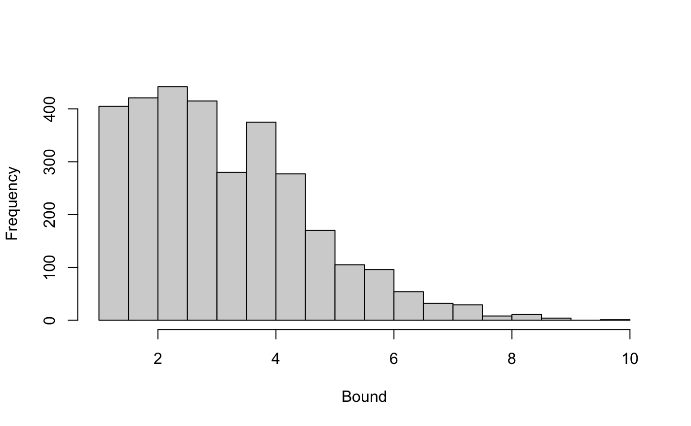

multiple-bias.RmdIt is likely that an epidemiologic study is affected by more than one bias. We can use the EValue package to assess biases jointly. We start by characterizing the biases of interest: unmeasured confounding, selection bias, and differential misclassification. Functions allow us to characterize these biases according to the available options.
confounding()
selection(...)
"general" if the inferential goal is the total population, and by "selected" if the target is the selected population only. If "general", the default, is chosen, additional arguments are "increased risk" or "decreased risk" (assumptions about the direction of risk in the selected population) and "S = U" (simplification used if the biasing characteristic is common to the entire selected population). See selection bias for more details on the interpretation of these options.misclassification(...)
"outcome" or "exposure" depending on whether differential outcome or exposure misclassification is of interest. If "exposure" is chosen, additional arguments rare_outcome and rare_exposure must be set to TRUE or FALSE, depending on whether the outcome and/or exposure are rare enough for odds ratios to be approximately equivalent to risk ratios.Each bias additional takes the argument verbose, which specifies if any messages should be printed to the console when calling the function. This argument should generally be unspecified (default verbose = FALSE) as the appropriate messages will be printed when using the biases in other functions, but may occasionally be helpful for debugging.
To use the sensitivity analysis functions provided in this package, these biases can be combined using multi_bias():
biases <- multi_bias(confounding(), selection("general", "increased risk"), misclassification("exposure", rare_outcome = TRUE))
There are 1-4 parameters that characterize each bias, but they differ depending on the ordering of the biases and on the options chosen. The interpretation of the parameters is given in Smith et al. 2020, but briefly, each is a risk (or odds) ratio (RR/OR) relating two variables, possibly conditional on others. (Each is additionally conditional on other measured covariates, omitted from the notation for simplicity.) The exposure variable is labeled \(A\), the outcome \(Y\), and their misclassified versions \(A^*\) and \(Y^*\), respectively. Selection into the sample is denoted with \(S = 1\). Finally, unmeasured confounding and selection bias are assumed to be due to unmeasured variables \(U_c\) and \(U_s\), respectively.
The table below contains the entire list of parameters using the notation in the Smith et al. paper. The corresponding output that will be printed in the R console is also given. Finally, the argument used to specify the magnitude of the parameter in the multi_bound() function is in the last column.
| Bias | Parameter | R Output | Function argument |
|---|---|---|---|
| confounding | \[\text{RR}_{AU_c}\] | RR_AUc |
RRAUc |
| confounding | \[\text{RR}_{U_cY}\] | RR_UcY |
RRUcY |
| selection after outcome misclassification | \[\text{RR}_{U_sY \mid A = 1}\] | RR_UsY|A=1 |
RRUsYA1 |
| selection after outcome misclassification | \[\text{RR}_{SU_s \mid A = 1}\] | RR_SUs|A=1 |
RRSUsA1 |
| selection after outcome misclassification | \[\text{RR}_{U_sY \mid A = 0}\] | RR_UsY|A=0 |
RRUsYA0 |
| selection after outcome misclassification | \[\text{RR}_{SU_s \mid A = 0}\] | RR_SUs|A=0 |
RRSUsA0 |
| selection after exposure misclassification | \[\text{RR}_{U_sY^* \mid A = 1}\] | RR_UsY*|A=1 |
RRUsYA1 |
| selection after exposure misclassification | \[\text{RR}_{U_sY^* \mid A = 0}\] | RR_UsY*|A=0 |
RRUsYA0 |
| selection after outcome misclassification | \[\text{RR}_{U_sY \mid A^* = 1}\] | RR_UsY|A*=1 |
RRUsYA1 |
| selection after outcome misclassification | \[\text{RR}_{SU_s \mid A^* = 1}\] | RR_SUs|A*=1 |
RRSUsA1 |
| selection after outcome misclassification | \[\text{RR}_{U_sY \mid A^* = 0}\] | RR_UsY|A*=0 |
RRUsYA0 |
| selection after outcome misclassification | \[\text{RR}_{SU_s \mid A^* = 0}\] | RR_SUs|A*=1 |
RRSUsA1 |
| confounding and selection | \[\text{RR}_{AU_{sc}\mid S = 1}\] | RR_AUsc|S |
RRAUscS |
| confounding and selection | \[\text{RR}_{U_{sc}Y\mid S = 1}\] | RR_UscY|S |
RRUscYS |
| outcome misclassification | \[\text{RR}_{AY^* \mid y}\] | RR_AY*|y |
RRAYy |
| exposure misclassification (rare outcome) | \[\text{OR}_{YA^* \mid a}\] | OR_YA*|a |
ORYAa |
| exposure misclassification (rare exposure and outcome) | \[\text{RR}_{YA^* \mid a}\] | RR_YA*|a |
RRYAa |
| outcome misclassification | \[\text{RR}_{AY^* \mid y, S = 1}\] | RR_AY*|y,S |
RRAYyS |
| exposure misclassification (rare outcome) | \[\text{OR}_{YA^* \mid a, S = 1}\] | OR_YA*|a,S |
ORYAaS |
| exposure misclassification (rare exposure and outcome) | \[\text{RR}_{YA^* \mid a, S = 1}\] | RR_YA*|a,S |
RRYAaS |
If both present, selection bias and misclassification should be listed in the multi_bias() function in the order in which they are assumed to affect the data. Confounding is assumed to be a state of nature that does not depend on how the data is selected or measured. If selection occurs before the exposure/outcome measurement, as is implied in the code above, then we can define parameters that describe the extent of differential misclassification within the selected group. If measurement takes place before selection, then the parameters describing selection are in terms of the misclassified variables.
We can easily see which parameters describe the biases of interest using the summary() function on the object created by multi-bias():
summary(biases)
#> bias output argument
#> 1 confounding RR_AUc RRAUc
#> 2 confounding RR_UcY RRUcY
#> 3 selection RR_UsY|A=1 RRUsYA1
#> 4 selection RR_SUs|A=1 RRSUsA1
#> 5 exposure misclassification OR_YA*|a,S ORYAaSContrast the above parameters with those we would get if we switched the ordering of the misclassification and the selection. These now imply that selection differs on the basis of the mismeasured exposure, and that the misclassification parameter can be interpreted with respect to the total population, not just those selected for the study.
summary( multi_bias(confounding(), misclassification("exposure", rare_outcome = TRUE), selection("general", "increased risk")) )
#> bias output argument
#> 1 confounding RR_AUc RRAUc
#> 2 confounding RR_UcY RRUcY
#> 3 selection RR_UsY|A*=1 RRUsYA1
#> 4 selection RR_SUs|A*=1 RRSUsA1
#> 5 exposure misclassification OR_YA*|a ORYAaOnce we know which biases are of interest and have characterized them using the function arguments, we can calculate a bound for the joint bias. We must choose values for the various parameters defining the magnitude of the biases.
Calculating a bound does not require memorizing the arguments in the above table. Instead, the parameters that need to be specified for a given set of biases can be printed using the print() function on an object created by multi_bias(). For example, using the biases chosen above:
print(biases)
We can then choose values for the necessary parameters. For our example, suppose we think that an unmeasured confounder \(U_c\) is associated with a 2-fold increased risk of the outcome and is 1.5 times as likely within the exposed compared to the unexposed groups. Then RRUcY = 2 and RRAUc = 1.5. Then we believe that, among the exposed, the selected group is 1.25 times as likely to have some level of unmeasured variable \(U_s\) than the non-selected group, and that \(U_s\) is associated with a 2.5-fold increase in the risk of the outcome. This would imply that RRSUsA1 = 1.25 and RRUsYA1 = 2.5. Finally, we hypothesize that the odds of a false-positive exposure measurement within this selected group were 1.75 times higher in the exposed than unexposed, so that ORYAaS = 1.75. We can calculate the maximum bias we would see if all those parameters described the true extent of the bias:
multi_bound(biases, RRUcY = 2, RRAUc = 1.5, RRSUsA1 = 1.25, RRUsYA1 = 2.5, ORYAaS = 1.75)
That is, if those values are correct, then the true risk ratio can be no more than 2.4 times smaller than the observed risk ratio. So if our observed risk ratio were 4, the true risk ratio must be at least 1.7.
If you don’t include the necessary parameter arguments given your biases of interest, an error will inform you which are necessary. Values of 1 imply no bias, so arguments set equal to 1 can be used to explore the absence of a certain bias.
Because we generally don’t know the exact magnitude of the parameters, it can be useful to calculate bounds with a range of values. For example, we can vary each of the parameters from 1 to 3 in increments of 0.25:
param_vals <- seq(1, 3, by = 0.5) # create every combination of values params <- expand.grid( RRUcY = param_vals, RRAUc = param_vals, RRSUsA1 = param_vals, RRUsYA1 = param_vals, ORYAaS = param_vals ) params$bound <- mapply(multi_bound, RRUcY = params$RRUcY, RRAUc = params$RRAUc, RRSUsA1 = params$RRSUsA1, RRUsYA1 = params$RRUsYA1, ORYAaS = params$ORYAaS, MoreArgs = list(biases = biases) )
There are two many dimensions to summarize the relationship between the parameters and the bounds in a simple table or figure, but we can examine the overall distribution of the bounds as well as how they depend on several of the parameters. For example, a simple histogram of the bounds calculated by varying each of the bias parameters between 1 and 3.
hist(params$bound, main = NULL, xlab = "Bound")

We can also calculate multi-bias E-values, which are analogous to E-values for unmeasured confounding but take into account multiple biases. The multi-bias E-value describes the minimum value that all of the sensitivity parameters for each of the biases would have to take on for a given observed risk ratio to be compatible with a truly null risk ratio.
To calculate a multi-bias evalue, we declare a set of biases as before, and then specify the observed risk ratio. For example, given the biases we have been working with and an observed risk ratio of 4, the multi-bias E-value is round(summary(multi_evalue(biases, RR(4))), 2):
multi_evalue(biases, est = RR(4))
#> point lower upper
#> RR 4.00000 NA NA
#> Multi-bias E-values 1.67513 NA NANotice that we have specified that our estimate is a risk ratio using the RR() function. If we want to instead calculate a multi-bias E-value for an odds ratio or a hazard ratio, we must specify so with the appropriate function, as well as decide whether it’s reasonable to assume that the outcome is rare enough to use a risk ratio approximation. If not, other approximations will be used.
# square-root approximation of the odds ratio multi_evalue(biases, est = OR(4, rare = FALSE))
#> point lower upper
#> RR 2.000000 NA NA
#> Multi-bias E-values 1.327958 NA NATo additionally calculate a multi-bias E-value for the confidence interval, we can include it with the lo = and hi = arguments (these will be assumed to be on the same scale as the point estimate):
# use verbose = FALSE to suppress message about parameters multi_evalue(biases, est = RR(4), lo = 2.5, hi = 6, verbose = FALSE)
#> point lower upper
#> RR 4.00000 2.500000 6
#> Multi-bias E-values 1.67513 1.435575 NAThe function can also accommodate protective estimates:
multi_evalue(biases, est = RR(0.25), lo = 0.17, hi = 0.4, verbose = FALSE)
#> point lower upper
#> RR 0.25000 0.17 0.400000
#> Multi-bias E-values 1.67513 NA 1.435575Finally, if we are calculating a multi-bias E-value for a point estimate and just want to output the single value, we can use the summary() function, which will also automatically suppress the message about the parameters:
summary(multi_evalue(biases, est = RR(4)))
#> [1] 1.67513